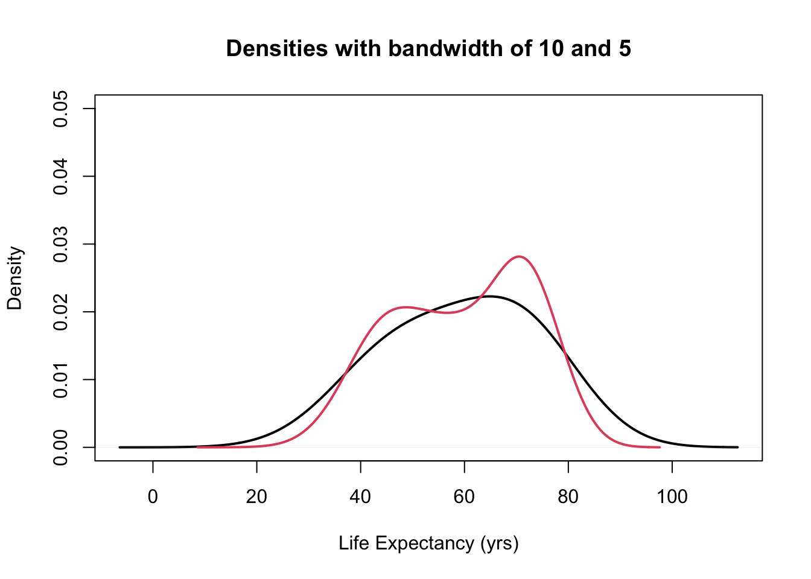
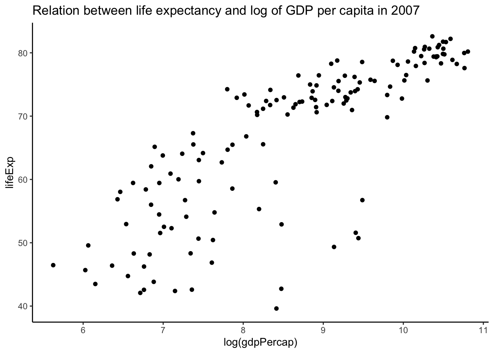

1. Data
1.1 Data
- Data consist of one or more variables measured / recorded on observational units in a population (cf. census) or sample of the population of interest.
## # A tibble: 6 × 6
## country continent year lifeExp pop gdpPercap
## <fct> <fct> <int> <dbl> <int> <dbl>
## 1 Afghanistan Asia 1952 28.8 8425333 779.
## 2 Afghanistan Asia 1957 30.3 9240934 821.
## 3 Afghanistan Asia 1962 32.0 10267083 853.
## 4 Afghanistan Asia 1967 34.0 11537966 836.
## 5 Afghanistan Asia 1972 36.1 13079460 740.
## 6 Afghanistan Asia 1977 38.4 14880372 786.In the example above the variables are country,
continent, year, lifeExp,
pop, and gdpPercap.
1.2 Variables
- Variable: characteristics that differ among observational units.
library(gapminder)
head(gapminder)## # A tibble: 6 × 6
## country continent year lifeExp pop gdpPercap
## <fct> <fct> <int> <dbl> <int> <dbl>
## 1 Afghanistan Asia 1952 28.8 8425333 779.
## 2 Afghanistan Asia 1957 30.3 9240934 821.
## 3 Afghanistan Asia 1962 32.0 10267083 853.
## 4 Afghanistan Asia 1967 34.0 11537966 836.
## 5 Afghanistan Asia 1972 36.1 13079460 740.
## 6 Afghanistan Asia 1977 38.4 14880372 786.1.3 Quantitative variables
- continuous (i.e., real numbers): any value corresponding to the points in an interval (e.g. blood pressure, height)
- discrete (i.e., integers): countable number of values (e.g. number of events per year)
In the dataset above, the continuous variables are
lifeExp, pop, and gdpPercap. The
year variable could be considered
discrete.
1.4 Qualitative variables
- nominal: names or labels, NO natural order (e.g., sex, ethnicity, eye color)
- ordinal: ordered categories, NO natural numerical scale (e.g., muscle tone, tumor grade, New York Heart Association class)
In the dataset above, the qualitative variables are
country and continent. These are examples of
nominal variables.
1.5 Tidy Data
- The concept of tidy data was introduced by Hadley Wickam in his seminar paper (Wickam, 2014).
- There are three fundamental rules which make a
dataset tidy:
- 1> Each variable must have its own column.
- 2> Each observation must have its own row.
- 3> Each value must have its own cell.
- The advantage of tidy data is both conceptual and
practical:
- 1> it allows consistency among datasets and
- 2> the use of tools designed for this data structure.
1.6 Distribution
- distribution: frequencies of one or more (quantitative or qualitative) variables recorded on units in a population or sample of interest.
- distribution table: a table of absolute frequencies (i.e., counts) or relative frequencies (i.e., percentages) or both for the values taken on by the variable(s) in the group of interest.
- population distribution: distribution of variables for the units in a population
- population parameters: summaries or measures of the
population distribution.
- Usually the population distribution and population parameters are unknown.
- sample distribution: distribution of variables for the units in a sample
- sample statistics: summaries or measures computed
from the sample distribution.
- Usually sample statistics (sample distributions) are used to estimate the unknown population parameters (population distributions).
1.7 Numerical and graphical summaries
- Often more informative to provide a summary of the data rather than to look at all the individual values, especially if the dataset has more than 10-20 observations.
- data summaries can be either numerical or graphical
and allow us to:
- focus on the main characteristics of the data.
- reveal unusual features of the data.
- summarize relationship between variables.
1.8 Exploratory Data Analysis (EDA)
- A key step of nay data analysis and of statistical practice in general
- Before formally modeling the data, the dataset must be examined to reveal expected and unexpected characteristics of the data.
- Also useful for determining quality issues with the data (e.g. missing values, unusual outliers, etc.)
- Also useful to examine the data to check the plausibility of the assumptions of candidate statistical models.
1.9 Reporting of the results
- numerical and graphical summaries are also useful for
displaying and reporting the results of a statistical
analysis.
- e.g. once can report graphical displays of the distribution of the estimators,
- or check the residuals of the model, or compare the effect sizes of several explanatory variables.
2. One variable - graphic summary
- histograms
- kernel density plots
- boxplots
2.1 Histograms
- A histogram is used to display variables by aggregating similar values into “bins” to represent the distribution.
- The width of the bin is determined by the analyst (you) and most software distribution have a default algorithm for determining the bin width.
- Once the bin width is determined, the number of observations (or the proportion of observations) that fall within that interval is computed and graphed.
- The procedures are:
- 1> partition the real line into intervals (bins).
- 2> assign each observation to its bin depending on its numerical values.
- 3> count the number of observations in each bin (or determine the proportion of values within each bin).
- A frequency histogram reports the counts in each bin.
- A relative frequency histogram reports the proportion of observations within each bin.
- Relative frequency histograms are more useful when comparing histograms from samples of different sample sizes. (서로 다른 n을 가진 샘플들 간의 비교 시에 더 용이함)
2.1.1 Example: Life expectancy
hist(gapminder$lifeExp, main = "Frequency Histogram", xlab = "Life Expectancy (years)")hist(gapminder$lifeExp, main = "Relative Frequency Histogram", freq = FALSE, xlab = "Life Expectancy (years)")
- Using
freq = FALSEoption, a frequency histogram can be converted into a relative frequency histogram easily.
- The only difference between these two histograms is the y-axis (and the title). The shape and bins remain the same.
- The proportions of the observations in each bin adds to 1 in a relative frequency histogram.
2.1.2 How to choose the bins
- The histogram representation of the data depends on two
critical chocies:
- The number of bins or the bin width (knowing one defines the other if the bin widths are equal in size)
- The location of the bin boundaries (important if the bin widths are not of equal size)
- Note that the number of bins in the histogram controls the amount of infomration loss: the larger the bin width the more information we lose
- Too many bins do not allow us to identify interesting patterns within the data because they get lost in the noise.
2.1.3 Example: Life expectancy
- Use
breaks()option to change this. - The bins don’t correspond to exactly the number you put in, because
of the way
Rruns its algorithm to break up the data but it gives you generally what you want.
par(mfrow = c(2, 2))
hist(gapminder$lifeExp, breaks = 5, main = "Breaks = 5", xlab = "Life Expectancy (yrs")
hist(gapminder$lifeExp, breaks = 10, main = "Breaks = 10", xlab = "Life Expectancy (yrs)")
hist(gapminder$lifeExp, breaks = 30, main = "Break = 30", xlab = "Life Expectancy (yrs)")
hist(gapminder$lifeExp, breaks = 100, main = "Breaks = 100", xlab = "Life Expectancy (yrs)")2.1.4 How to choose the bins
Question: whether there is an optimal number of bins.
R’s default is equi-spaced breaks in which the area of each bin is proportional to the number of points in each bin.
- But this method is possible to provide unequally spaced breaks.
- R uses Sturges’ formula.
\[ k=log_2n+1 \]
- The formula above is derived from the binomial coefficient, and assumes that the data are approximately normally distributed.
- However, it is known that Sturges’ rule lead to
over-smoothed histograms.
- Thus, manually choosing the number of breaks might be beneficial in real applications.
- It is often informative to generate several histograms of the data with differeing numbers of bins as done in the example above.
2.2 Density plot
- Density plots are smoothed versions of histograms
- obtained using kernel density estimation methods.
- Kernel density estimators are defined as:
\[ f_{n}(x)=\frac{1}{n h} \sum_{i=1}^{n} K\left(\frac{x-x_{i}}{h}\right) \]
- \(h\): bandwidth
- \(K(.)\): Kernel function – Usually standard Gaussian density is used as kernel
\[ K(x)=\frac{1}{\sqrt{2 \pi}} e^{-x^{2} / 2} \]
2.2.1 Density plots
x <- sort(c(19, 20, 10, 17, 16, 13, 16, 10, 7, 18))
kde <- density(x, kernel = "gaussian", bw = 2)
A.kernel <- lapply(x, function(i) {
density(i, kernel = "gaussian", bw = 2)
})
for (i in seq_along(A.kernel)) {
A.kernel[[i]][["y"]] <- A.kernel[[i]][["y"]]/length(x)
}plot(x, rep(0, length(x)), col = "red", pch = 17, xlim = c(min(kde$x), max(kde$x)),
ylim = c(0, max(kde$y)), ylab = "Density", main = "Construction of Kernel Density Estimation")plot(x, rep(0, length(x)), col = "red", pch = 17, xlim = c(min(kde$x), max(kde$x)),
ylim = c(0, max(kde$y)), ylab = "Density", main = "Construction of Kernel Density Estimation")
lines(A.kernel[[1]], col = "red")plot(x, rep(0, length(x)), col = "red", pch = 17, xlim = c(min(kde$x), max(kde$x)),
ylim = c(0, max(kde$y)), ylab = "Density", main = "Construction of Kernel Density Estimation")
for (j in c(1, 3)) {
lines(A.kernel[[j]], col = "red")
}plot(x, rep(0, length(x)), col = "red", pch = 17, xlim = c(min(kde$x), max(kde$x)),
ylim = c(0, max(kde$y)), ylab = "Density", main = "Construction of Kernel Density Estimation")
for (j in seq_along(A.kernel)) {
lines(A.kernel[[j]], col = "red")
}plot(x, rep(0, length(x)), col = "red", pch = 17, xlim = c(min(kde$x), max(kde$x)),
ylim = c(0, max(kde$y)), ylab = "Density", main = "Construction of Kernel Density Estimation")
for (j in seq_along(A.kernel)) {
lines(A.kernel[[j]], col = "red")
}
lines(kde)hist(gapminder$lifeExp, probability = TRUE, main = "Histogram with a Kernal Density",
xlab = "Life Expectancy (yrs)")
lines(density(gapminder$lifeExp), col = 2, lwd = 2)- The choice of bandwidth determines the smoothness of the density.
There is a bias-variance trade-off in the choice of the bandwidth:
- the larger the bandwidth, the smoother the density (low variance, high bias)
- the smaller the bandwidth, the less smooth the density (high variance, low bias)
plot(density(gapminder$lifeExp, bw = 10), ylim = c(0, 0.05), main = "Density with bandwidth of 10",
lwd = 2, xlab = "Life Expectancy (yrs)")b <- c(5, 3, 1, 0.5) #this is a vector for the different bandwidths used later
plot(density(gapminder$lifeExp, bw = 10), ylim = c(0, 0.05), main = "Densities with bandwidth of 10 and 5",
lwd = 2, xlab = "Life Expectancy (yrs)")
lines(density(gapminder$lifeExp, bw = b[1]), col = 2, lwd = 2)
plot(density(gapminder$lifeExp, bw = 10), ylim = c(0, 0.05), main = "Densities with bandwidths = 10, 5, 3",
lwd = 2, xlab = "Life Expectancy (yrs)")
for (i in 1:2) {
lines(density(gapminder$lifeExp, bw = b[i]), col = i + 1, lwd = 2)
}plot(density(gapminder$lifeExp, bw = 10), ylim = c(0, 0.05), main = "Densities with bandwidths = 10, 5, 3, 1",
lwd = 2, xlab = "Life Expectancy (yrs)")
for (i in 1:3) {
lines(density(gapminder$lifeExp, bw = b[i]), col = i + 1, lwd = 2)
}
plot(density(gapminder$lifeExp, bw = 10), ylim = c(0, 0.05), main = "Density with Different Bandwidths",
lwd = 2, xlab = "Life Expectancy (yrs)")
for (i in seq_along(b)) {
lines(density(gapminder$lifeExp, bw = b[i]), col = i + 1, lwd = 2)
}
legend("topleft", paste0("bw=", c(10, b)), fill = 1:5)3. One variable - numeric summary
x3 <- data.frame(X1 = rnorm(10000, 0, 1), X2 = rnorm(10000, 5, 1), X3 = rnorm(10000,
0, 2), X4 = rchisq(10000, 2) - 2, X5 = rt(10000, df = 3))
plot(density(x3[, 1]), lwd = 2, xlim = c(-8, 17), xlab = "", main = "Kernel density estimates for five distributions",
sub = "")
for (j in (2:NCOL(x3))) lines(density(x3[, j]), col = j, lwd = 2)3.0 Location, Scale/Variability, and Sahpe
Can we describe the differences between these five distributions using numerical summaries?
1> Location
- what is the “most common” value of the distribution?
- where is the “center” of the data?
2> Scale or Variability
- how “concentrated” are the values around the average?
- how “spread out” are the values?
3> Shape
- what is the “shape” of the distribution?
3.0.1 Location: Mean and median
- (arithmetic) mean
\[ \bar{x}=\frac{\sum_{i=1}^{n} x_{i}}{n} \]
- median = robust statistic: it is less influenced by extreme values, unlike the man, which is not robust.
3.0.2 Example: mean vs median
x <- 1:10
mean(x)## [1] 5.5median(x)## [1] 5.5x <- c(1:9, 100)
mean(x)## [1] 14.5median(x)## [1] 5.53.0.3 Example: Location of the five distributions
plot(density(x3[, 1]), lwd = 2, xlim = c(-8, 17), xlab = "", main = "Kernel density estimates for five distributions",
sub = "")
for (j in (2:NCOL(x3))) lines(density(x3[, j]), col = j, lwd = 2)
legend("topright", paste0("Mean: ", round(colMeans(x3))), fill = 1:NCOL(x3))3.1 Scale: Standard Deviation and Variance
Standard Deviation (SD): measures the spread, variability, or scale of a distribution.
It is defined as:
\[ s_{x}=\sqrt{\frac{\sum_{i=1}^{n}\left(x_{i}-\bar{x}\right)^{2}}{n-1}} \]
- Variance: is the square of the standard deviation.
3.1.1 Example: Standard Deviation of the five distributions
plot(density(x3[, 1]), lwd = 2, xlim = c(-8, 17), xlab = "", main = "Kernel density estimates for five distributions",
sub = "")
for (j in (2:NCOL(x3))) lines(density(x3[, j]), col = j, lwd = 2)
legend("topright", paste0("Mean: ", round(colMeans(x3)), "; SD: ", round(apply(x3,
2, sd))), fill = 1:NCOL(x3))3.1.2 Properties of the Mean and Standard Deviation
- If the data are approximately normally distributed, roughly
- 68% of the observations are within one SD of the mean.
- 95% of the observations are within two SD of the mean.
- 99.7% of the observations are within three SD of the mean.
- For arbitrary constants \(a\) and \(b\), let \(y_i\)=\(a\)\(x_i\)+\(b\), \(i\)=\(1\),…,\(n\). Then,
\[ \begin{array}{l}\bar{y}=a \bar{x}+b \\ \text { and } \\ s_{y}=|a| s_{x}\end{array} \]
- It is often useful to standardize variables to have mean zero and SD of one. (i.e., Z-score or standard units)
\[ z=\frac{x-\bar{x}}{s_{x}} \]
3.1.3 Scale / Variability: robust statistic
- median
- inter-quartile range (IQR)
- the difference between the upper- and lower-quartile (i.e., the observation that has 75% of the data below it and observation that has 25% of the observations below it, respectively.)
- The IQR contains the middle 50% of the data.
- median absolute deviation (MAD): the median of the absolute deviations from the median
\[ M A D_{x}=\operatorname{median}\left(\left|x_{i}-M_{x}\right|\right) \]
where \(M_x\) is the median of \(X=\left\{x_{1}, \ldots, x_{n}\right\}\)
Note that quantile vs. quartile.
3.2 Quantiles
- \(f quantile\) or $f $100th \(percentile\) of a distribution is the smallest number \(q\) such that at least $f $100th of the observations are less than or equal to \(q\).
- $f $100% of the area under the histogram is to the left of the \(f\) quantile.
| Quartiles | Quantiles |
|---|---|
| First/lower quartile | 0.25 quantile |
| Second quartile/median | 0.50 quantile |
| Third/upper quartile | 0.75 quantile |
3.2.1 Median as a Quantile
\[ \operatorname{median} \equiv\left\{\begin{array}{ll}x_{m+1}, & \text { if } n=2 m+1, \text { for some } m \geq 0 \\ \frac{1}{2}\left(x_{m}+x_{m+1}\right), & \text { if } n=2 m, \text { for some } m>0\end{array}\right. \]
3.3 Boxplots
- also called box-and-whisker plot
- graphical representation of the median, upper quartile, lower quartile, and the range with outliers (if possible).
x <- c(rnorm(100), c(-4, 5))
boxplot(x)
- bold line: median
- upper and lower sides of the box: upper and lower quartiles, respectively
- central box: IQR
- whiskers (점선): range
- outliers: any point more than 1.5XIQR above the upper quartile (or below the lower quartile) are plotted individually as outliers
Comparing the distances between the quartiles and the median gives indication of the symmetry of the distribution.
boxplot(x3, col = 1:NCOL(x3), main = "Boxplots for Five Distributions")3.3.1 Pros and Cons of Boxplots
- Pros:
- 1> effectiveness at identifying outlying observations
- 2> quick way to compare several distributions as can be seen in graphic with the boxplots corresponding to the 5 distributions
- Cons: hides multimodality in the data.
x <- rnorm(100)
y <- rgamma(100, shape = 0.5)
z <- c(rnorm(50), rnorm(50, mean = 5))
par(mfrow = c(2, 3))
boxplot(x, main = "Normally distributed")
boxplot(y, main = "Skewed")
boxplot(z, main = "Bimodal")
hist(x, probability = TRUE, main = "")
lines(density(x), col = 2, lwd = 2)
hist(y, probability = TRUE, main = "")
lines(density(y), col = 2, lwd = 2)
hist(z, probability = TRUE, main = "")
lines(density(z), col = 2, lwd = 2)3.4 Normal Q-Q plot
- to display all the quantiles of a distribution
- and to compare them to the quantiles of reference
distribution
- e.g. From a qq-plot, in normal distribution, one can detect shifts in location, differences in scale/variability, and differences in shape.
par(mfrow = c(2, 3))
for (i in seq_len(NCOL(x3))) {
qqnorm(x3[, i], pch = 20, col = i)
abline(0, 1)
}- (1st plot) two distributions are the same, both normal.
- (2nd plot) shows a shift or diffrence in mean between one distribution compared to the other, but both are normal.
- (3rd plot) illustrates a difference in the scale/variability (i.e., Variance, SD) between the two distributions.
- (4th plot) demonstrates a difference in shape between the two distributions. The distribution is more skewed than a normal distribution.
- (5th plot) demonstrates a difference in shape between the two distributions. The distribution has heavier tails than a normal distribution.
3.5 Shape: Skewness and Kurtosis
- green, blue, and cyan distributions have the same mean and variance, but they are clearly different. Why?
- Skewness and kurtosis are based on the third and fourth moment of the distribution, respectively.
- Moments are statistics of a data distribution, that relate to the shape of the distributions.
3.5.1 Shape: Skewness
- skewness relates to the symmetry
of the distribution:
- skewness=0: the distribution is symmetric around its mean
- skewness>0: positive skewness or right-skewed
- skewness<0: negative skewness or left-skewed

3.5.2 Shape: Kurtosis
- kurtosis relates to the weight of
the tails of the distribution:
- kurtosis=3: normal distribution
- kurtosis>3: distribution has heavier tails, more likely to observe extreme values
- kurtosis<3: distribution has lighter tails, less likely to observe extreme values
3.5.3 Shape: Skewness and Kurtosis
4. Two variables - graphic summary
- boxplots, histograms, and density plots all summrize the univariate distribution of a single variable.
- What if we want to capture the relation between variables?
- scatterplot is for two variables.
4.1 Scatterplots

4.2 Overplotting problem of Scatterplots
gapminder %>%
ggplot(aes(x = log(gdpPercap), y = lifeExp)) + geom_point() + theme_classic() +
ggtitle("Relation between life expectancy and log of GDP per capita (all years)")- if the number of points increases substantially, there will be a lot of overlap among the points and you lose information because you would not know if there are points on top of others.
4.3 Overplotting: hexbin scatterplot
4.4 Overplotting: density scatterplot
gapminder %>%
ggplot(aes(x = log(gdpPercap), y = lifeExp)) + geom_density2d() + theme_classic() +
ggtitle("Relation between life expectancy and log of GDP per capita (all years)")- Another plot to use when there is considerable overplotting of points is the two-d density plot (geom_density2d). The closer the lines are to each other, the more dense the points.
5. Two variables - numeric summary
- Variance and Standard deviation
are summaries of the spread of the distribution of one
variable.
- Thus, both cannot explain the relationship between two variables.
5.1 Covariance
- Covariance can be used to assess the relationship between two variables, say x and y.
\[ r=\operatorname{Cor}(x, y)=\frac{1}{n} \sum_{i=1}^{n}\left(\frac{x_{i}-\bar{x}}{s_{x}}\right)\left(\frac{y_{i}-\bar{y}}{s_{y}}\right) \]
5.2 Correlation Coefficient
- the problem with the covariance is that it depends on the scale of the two variables.
- often more useful to have an absolute indication of the strength of
the relationship, such as an index between -1 and 1.
- Such an index is the correlation coefficient.
- Correlation Coefficient is a measure of a
linear association between two variables.
- r=0: no (linear) relationship or association
- r=1: perfect linear positive association
- r=-1: perfect linear negative association
- There are several types of correlation: Pearson
correlation, Spearmans’ correlation
coefficient.
- Both are robust measure of correlation, where ranks are used in place of the values of x and y.
5.3 Example of Correlation in Data
suppressPackageStartupMessages(library(MASS))## Warning: package 'MASS' was built under R version 4.0.5par(mfrow = c(2, 2))
x <- mvrnorm(100, c(0, 0), matrix(c(1, 0, 0, 1), 2, 2, byrow = TRUE))
plot(x, xlab = "x", ylab = "y", main = paste("Cor[x,y] = ", round(cor(x[, 1], x[,
2]), 2), sep = ""))
x <- mvrnorm(100, c(0, 0), matrix(c(1, -0.75, -0.75, 1), 2, 2, byrow = TRUE))
plot(x, xlab = "x", ylab = "y", main = paste("Cor[x,y] = ", round(cor(x[, 1], x[,
2]), 2), sep = ""))
x <- mvrnorm(100, c(0, 0), matrix(c(1, 0.75, 0.75, 1), 2, 2, byrow = TRUE))
plot(x, xlab = "x", ylab = "y", main = paste("Cor[x,y] = ", round(cor(x[, 1], x[,
2]), 2), sep = ""))
x <- mvrnorm(100, c(0, 0), matrix(c(1, 0.99, 0.99, 1), 2, 2, byrow = TRUE))
plot(x, xlab = "x", ylab = "y", main = paste("Cor[x,y] = ", round(cor(x[, 1], x[,
2]), 2), sep = ""))5.4 These patterns are not captured by univariate techniques
par(mfrow = c(2, 2))
x <- mvrnorm(100, c(0, 0), matrix(c(1, 0, 0, 1), 2, 2, byrow = TRUE))
boxplot(data.frame(x), main = paste("Cor[x1,x2] = ", round(cor(x[, 1], x[, 2]), 2),
sep = ""))
x <- mvrnorm(100, c(0, 0), matrix(c(1, -0.75, -0.75, 1), 2, 2, byrow = TRUE))
boxplot(data.frame(x), main = paste("Cor[x1,x2] = ", round(cor(x[, 1], x[, 2]), 2),
sep = ""))
x <- mvrnorm(100, c(0, 0), matrix(c(1, 0.75, 0.75, 1), 2, 2, byrow = TRUE))
boxplot(data.frame(x), main = paste("Cor[x1,x2] = ", round(cor(x[, 1], x[, 2]), 2),
sep = ""))
x <- mvrnorm(100, c(0, 0), matrix(c(1, 0.99, 0.99, 1), 2, 2, byrow = TRUE))
boxplot(data.frame(x), main = paste("Cor[x1,x2] = ", round(cor(x[, 1], x[, 2]), 2),
sep = ""))
5.5 Example: Quadratic Association
- Note that the correlation coefficient only captures linear relationships between two variables.
- However, in many real situations, variables have non-linear relationships.
x <- rnorm(500)
y <- -x^2 + rnorm(500, 0, 0.5)
plot(x, y, main = paste("Cor[x,y] = ", round(cor(x, y), 2), sep = ""))
abline(lm(y ~ x)[[1]], col = 2, lwd = 2)
lines(lowess(y ~ x, f = 0.2), col = 3, lwd = 2)
legend("bottom", c("Ordinary linear regression", "Robust local regression"), col = 2:3,
lwd = 2)
- 만약 두 변수 x, y간 non-linear relationship이 있는 경우, x, y의 상관계수를 측정했을 때 0이 나올 수 있음
- 이는 x, y가 관계를 가지고 있는 것이 분명해도, 그 관계가 ’linear’이 아니가 때문임
- 상관계수는 두 변수의 “linear relationship”만을 알려줌. 따라서, x, y 간의 relationship이 있더라도 그 관계가 선형이 아니라면, 상관계수로 두 변수 x, y의 relationship을 제대로 측정할 수 없음.
6. What if more than two variables
- covariance matrix (also called variance/covariance matrix)
- correlation matrix
6.1 Correlation Matrix
- To get a correlation matrix for the variables
lifeExp,pop, andgdpPercapin the gapminder data, we can use theRfunctioncor().
cor(gapminder[, 4:6])## lifeExp pop gdpPercap
## lifeExp 1.00000000 0.06495537 0.58370622
## pop 0.06495537 1.00000000 -0.02559958
## gdpPercap 0.58370622 -0.02559958 1.00000000- Graphical methods for displaying the correlation.
library(ellipse)##
## Attaching package: 'ellipse'## The following object is masked from 'package:graphics':
##
## pairsplotcorr(r)6.2 Univariate Distribution of Multiple Variables
- There is a way to take a look at the univariate distribution of
multiple variables at a time.
- Useful when we have a large collection of fairly uniformly distributed variables.
- e.g. In genomics, we often collect expression data for thousands of genes (variables) at a time.
- In such cases, we can disply boxplots or density plots for multiple variables.
- Another popular display is the heatmap.
6.3 Example: Expression of 5 genes
# Install bioconductor packages
if (!requireNamespace("BiocManager", quietly = TRUE)) install.packages("BiocManager")
BiocManager::install("golubEsets")
if (!requireNamespace("BiocManager", quietly = TRUE)) install.packages("BiocManager")
BiocManager::install("hu6800.db")suppressPackageStartupMessages(library(golubEsets))## Warning: package 'BiocGenerics' was built under R version 4.0.5suppressPackageStartupMessages(library(hu6800.db))
data(Golub_Train)
golub <- exprs(Golub_Train)
golub[golub < 100] <- 100
golub[golub > 16000] <- 16000
golub <- log2(golub)
AffyID <- mappedkeys(hu6800SYMBOL)
symbols <- links(hu6800SYMBOL[AffyID])
indZYX <- grep("zyx", symbols[, 2], ignore.case = TRUE)
indNUP <- grep("NUP98", symbols[, 2], ignore.case = TRUE)
symbols5 <- links(hu6800SYMBOL[c(symbols[c(indZYX[1], indNUP[1]), 1], c("AB004884_at",
"A28102_at", "AC000064_cds1_at"))])
golub5 <- t(golub[symbols5[, 1], ])
colnames(golub5) <- symbols5[, 2]
boxplot(golub5, ylab = "Gene expression")library(ggridges)
library(tidyr)
library(ggplot2)
golub_tall <- gather(data.frame(golub5), key = "Gene", value = "Expression")
ggplot(golub_tall, aes(x = Expression, y = Gene, group = Gene, fill = Gene)) + geom_density_ridges() +
theme_classic() + scale_fill_brewer(palette = "Set3")## Picking joint bandwidth of 0.392library(pheatmap)
pheatmap(t(golub5))